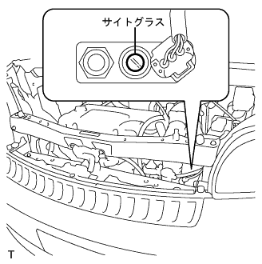
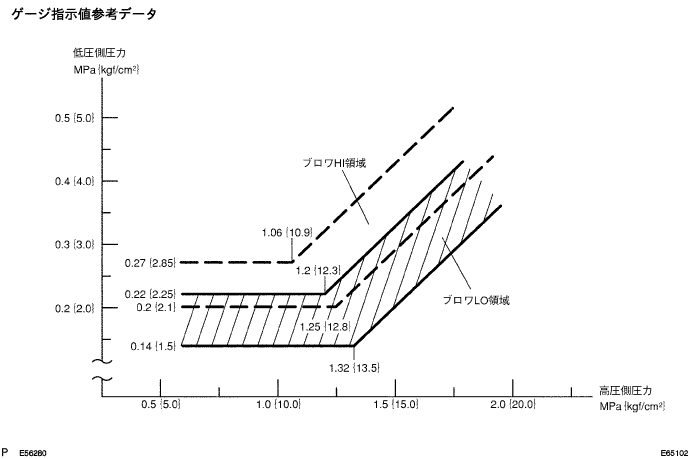
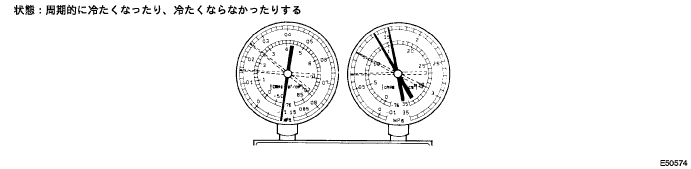
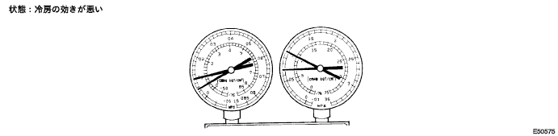
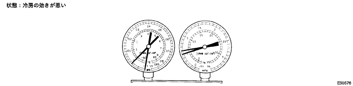
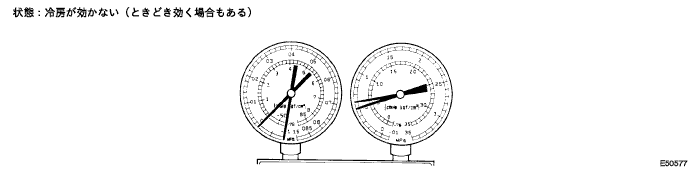
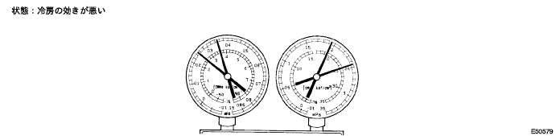
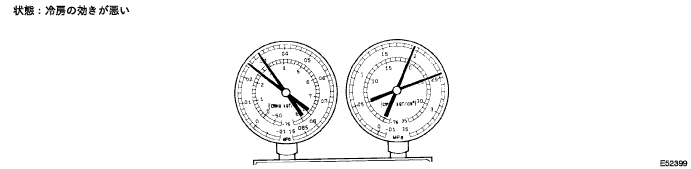
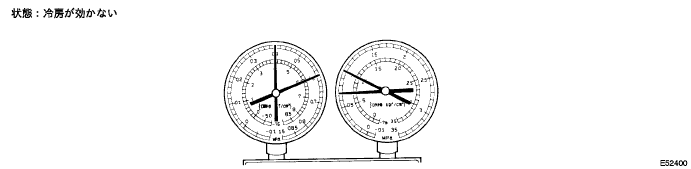
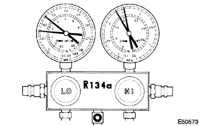

冷媒量点検
リキッドチューブAサイトグラスを確認する。
次の条件に車両をセットする。[*1]
項目 条件 ドア 全開 設定温度表示 18.0(MAX COOL) エンジン回転 1500ｒｐｍ ブロワスピード HI A/C ON [*1]の状態でサイトグラスを点検する。
症状 冷媒量 処置 サイトグラスに気泡がある 不充分 - ガス漏れがないか確認し、必要であれば修理する
- 気泡がなくなるまで、冷媒ガスを注入する
サイトグラスに気泡がない ない、不充分、多すぎる (*2)と(*3)を参照 コンプレッサ吸気口と排気口の温度差がない(*2) 空またはほとんど空 - ガス漏れがないか確認し、必要であれば修理する
- 気泡がなくなるまで、冷媒を注入する
コンプレッサ吸気口と排気口の温度差が著しい(*3) 適正または多すぎる (*4)と(*5)を参照 エアコンを切った直後、サイトグラスの冷媒ガスが透明のままである(*4) 多すぎる - 冷媒ガスを排出する
- エアを抜き、適正な量の新しい冷媒ガスを注入する
エアコンを切った直後、冷媒ガスが泡立ち、その後透明になる(*5) 適正 - - □ 参 考 □
- 室温が平常より高い場合、冷却が充分であればサイトグラスの気泡は正常と考えられる。
- ガス漏れがないか確認し、必要であれば修理する
|  |
ゲージによる冷媒圧力点検
エアコンツールセットを取り付ける。
次の条件に車両をセットする。[*2]
項目 条件 エンジン 暖機後 ドア 全開 A/C ON エンジン回転 1500ｒｐｍ 内外気切り替えスイッチ RECIRC 設定温度表示 18.0(MAX COOL) ブロワスピード HI エアコン吸い込み口温度 30°C-35°C
[*2]の状態で、ゲージの数値を点検する。
- 基準
- 0.15-0.25MPａ(1.5-2.5kgf·cm2)(低圧側)
- 1.37-1.57MPａ(14-16kgf·cm2)(高圧側)
- □ 参 考 □
- 基準値は、冷媒ガス充てん量正常時を示す。
[*2]の状態で、ゲージの数値を点検する。
基準値測定結果 症状 原因 診断 処置 作動中、低圧側の圧力が真空になったり、正常になったりする 冷却システムに入った水分がエクスパンションバルブ口で凍結し、一時的に冷媒が循環しなくなるが、氷が解けた後、正常な状態を回復する - クーラドライヤが過飽和状態
- 冷却システムの水分がエクスパンションバルブ口で凍結し、冷媒ガスの循環を遮ってい
- .クーラドライヤを交換する
- 繰り返し空気を抜くことによってサイクル内の水分を除去する
- 新しい冷媒ガスを適量注入する
- □ 参 考 □
- 基準値は、冷却システムに水分が混入している場合を示す。
- クーラドライヤが過飽和状態
[*2]の状態で、ゲージの数値を点検する。
基準値測定結果 症状 原因 診断 処置 - 低高圧両側の圧力が低い
- サイトグラスに連続的に気泡がみられる
- 冷却の性能が充分ではない
冷却システムのどこかにガス漏れがある - 冷媒ガスが少ない
- 冷媒ガス漏れ
- 媒ガス漏れがないか調べ、必要であれば修理する
- 新しい冷媒ガスを適量注入する
- ゲージに接続したときの圧力指示値0に近ければ漏れ箇所を点検し修理後、真空引き作業を行うこと
- □ 参 考 □
- 基準値は、冷房の効きが悪い場合を示す。
- 低高圧両側の圧力が低い
[*2]の状態で、ゲージの数値を点検する。
基準値測定結果 症状 原因 診断 処置 - 低高圧両側の圧力が低い
- クーラコンデンサからＡ／Ｃユニットへ接続する配管に霜ができる
クーラコンデンサコア内のほこりによって冷媒の流れが遮られている クーラコンデンサコアの詰まり クーラコンデンサコアを交換する - □ 参 考 □
- 基準値は、冷媒ガスの循環が悪い場合を示す。
- 低高圧両側の圧力が低い
[*2]の状態で、ゲージの数値を点検する。
基準値測定結果 症状 原因 診断 処置 - 低圧側の圧力に真空表示、高圧側にきわめて低い圧力表示
- クーラコンデンサコアまたはクーラエクスパンションバルブの前後の配管に霜あるいは露が見られる
- 冷媒ガスの流れが冷却システムの水分またはほこりによって遮られている
- 冷媒ガスの流れがクーラエクスパンションバルブから冷媒ガス漏れによって遮られている
冷媒ガスが循環しない - クーラエクスパンションバルブを調べる
- クーラエクスパンションバルブ内のほこりをエアガンによって除去する
- クーラコンデンサコアを交換する 4.真空引き後、新しい冷媒ガスを適量入れる
- .真空引き後、新しい冷媒ガスを適量入れる
- クーラエクスパンションバルブからの冷媒ガス漏れの場合、クーラエクスパンションバルブを交換する
- □ 参 考 □
- 基準値は、冷媒ガスが循環しない場合を示す。
- 低圧側の圧力に真空表示、高圧側にきわめて低い圧力表示
[*2]の状態で、ゲージの数値を点検する。
基準値測定結果 症状 原因 診断 処置 - 高低圧側の圧力が高すぎる
- エンジン回転数を下げてもサイトグラスの気泡が見られない
- 冷媒過多
- クーラコンデンサコアの冷却が不充分
- 冷媒過多
- クーラコンデンサコア冷却不良
- クーラコンデンサコアフィンを清掃する
- コンデンサファンモータ作動を確認する
- 1と2が正常な場合、冷媒量を調べ、冷媒を適量注入する
- □ 参 考 □
- 基準値は、冷媒ガスの入れすぎまたはクーラコンデンサコアの冷却が不充分の場合を示す。
- 高低圧側の圧力が高すぎる
[*2]の状態で、ゲージの数値を点検する。

基準値測定結果 症状 原因 診断 処置 - 低高圧側の圧力が高すぎる
- 低圧配管が触れないほど熱い
- サイトグラスに気泡がある
冷却システムにエア混入 - 冷却システムにエアが混入している
- 真空引きが不充分
- コンプレッサオイルが汚れていないか、不充分ではないか確認する
- コンプレッサオイルが汚れていないか、不充分ではないか確認する
- □ 参 考 □
- 基準値は、冷媒システムにエアが混入している場合を示す。
- 低高圧側の圧力が高すぎる
[*2]の状態で、ゲージの数値を点検する。
基準値測定結果 症状 原因 診断 処置 - 高低圧側の圧力が高すぎる
- 低圧側に霜または露が付着する
クーラエクスパンションバルブのトラブル - 低圧配管の冷媒過多
- クーラエクスパンションバルブの開けすぎ
クーラエクスパンションバルブを交換 - □ 参 考 □
- 基準値は、クーラエクスパンションバルブが不適正の場合を示す。
- 高低圧側の圧力が高すぎる
[*2]の状態で、ゲージの数値を点検する。
基準値測定結果 症状 原因 診断 処置 - 低高圧側の圧力が高すぎる
- 高圧側の圧力が低すぎる
クーラコンプレッサ内の漏れ - 圧縮不良
- バルブ漏れまたは摺動部品の破損
クーラコンプレッサの修理または交換 - □ 参 考 □
- 基準値は、クーラコンプレッサの圧縮不良の場合を示す。
- 低高圧側の圧力が高すぎる
|  |